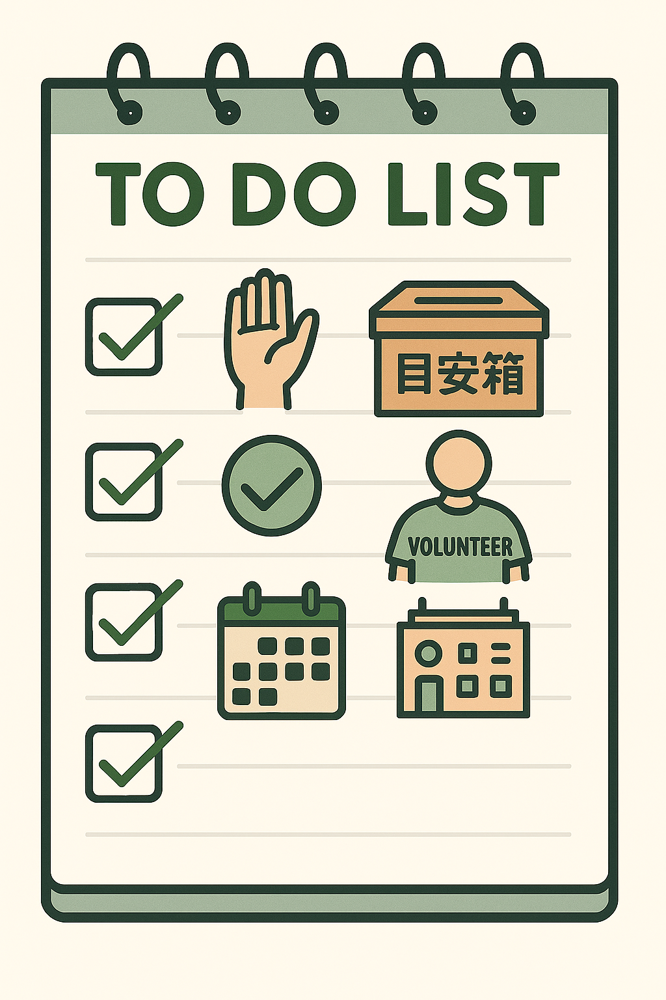

よしの ふひと
吉野 史

- メリハリのある行動（１２時までや１３時からは静かに勉強する。話すとしても静かに）
- 目安箱の設置（昨年と同様、皆の意見を取り入れる）
- ボランティア活動の推進（ボランティアをすることで人との会話を増やす）
- イベントの情報や各サークルの情報を周知する（情報を知ることで参加人数が増加する）
周知の仕方は以下の通り
- 鹿島朝日及び日本航空のオープンチャットや各学年のオープンチャットを利用し、必要があればLINE内での投票及びGoogleやmicrosoft office等のformを用いたアンケートを実施する